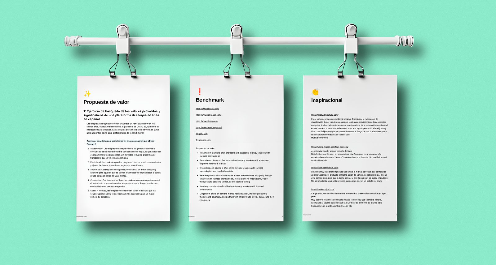
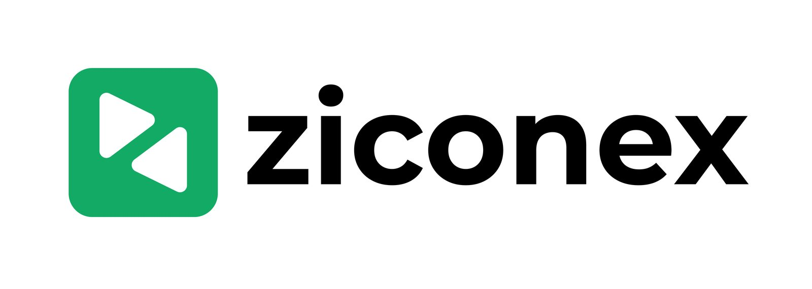
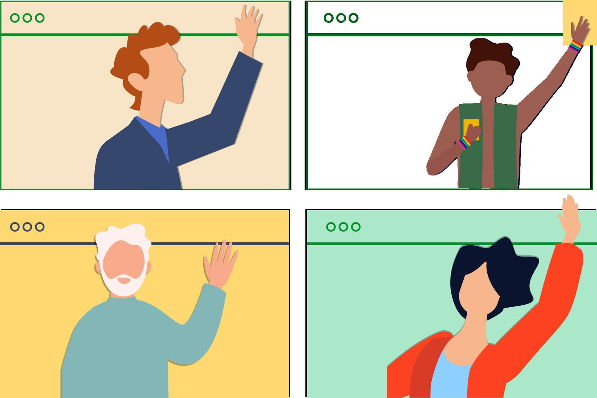
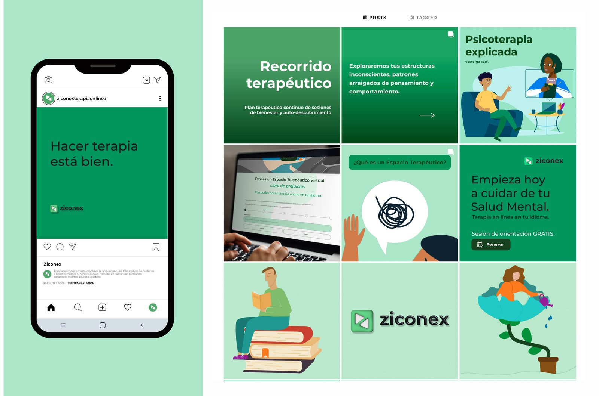
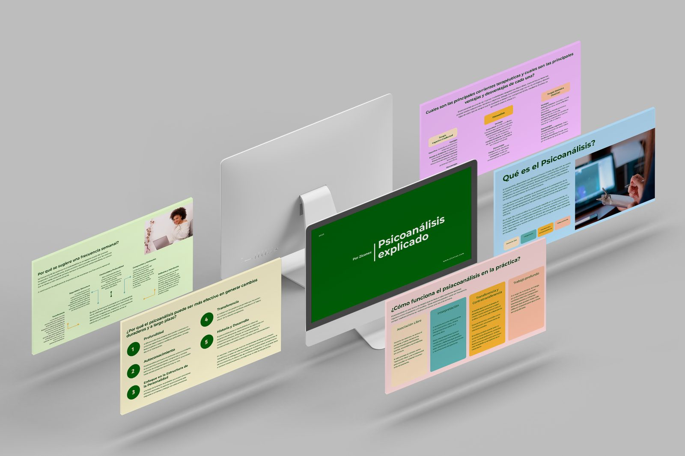
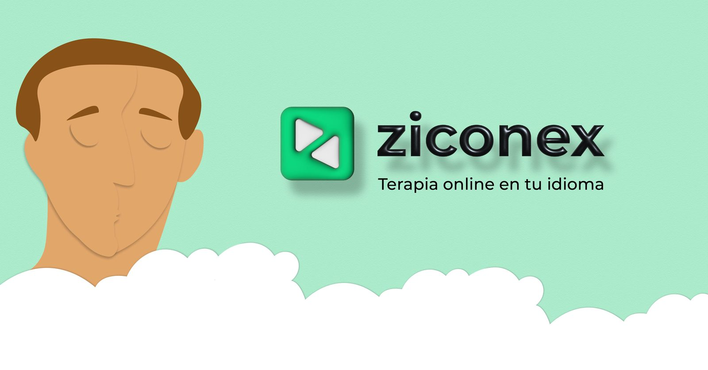
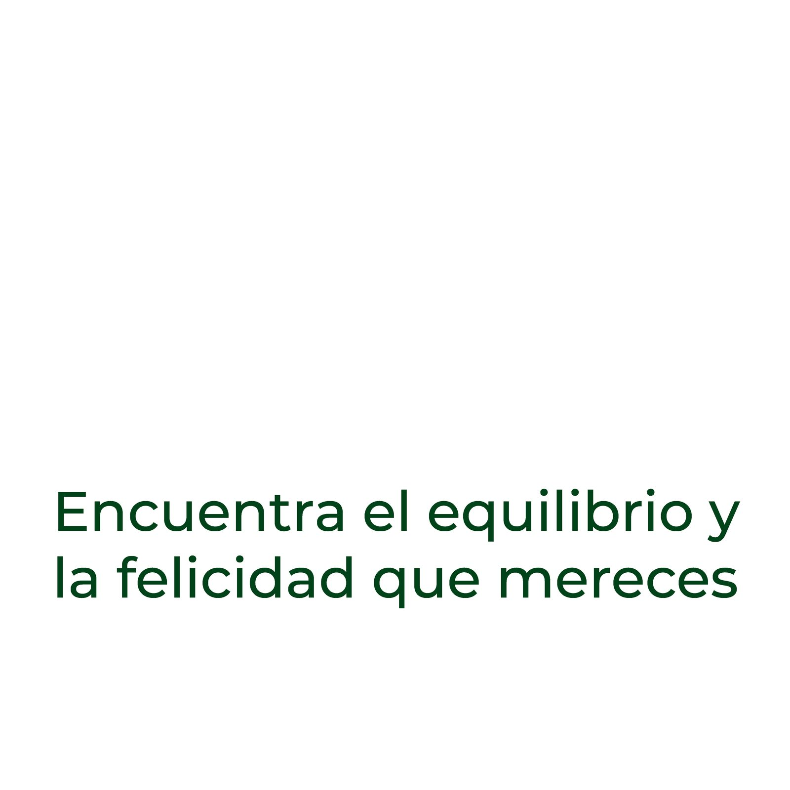
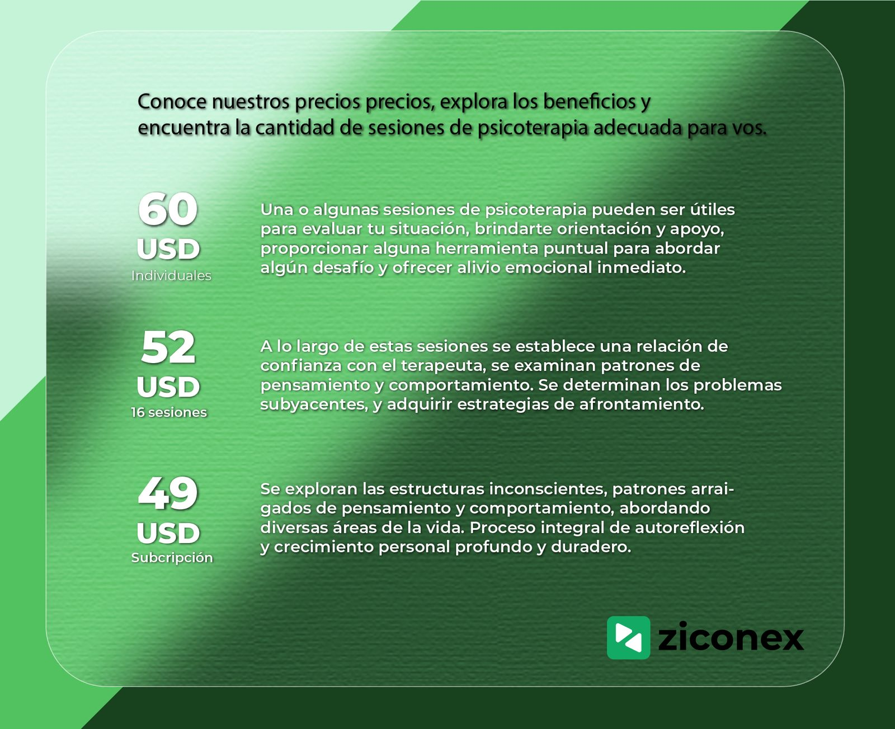
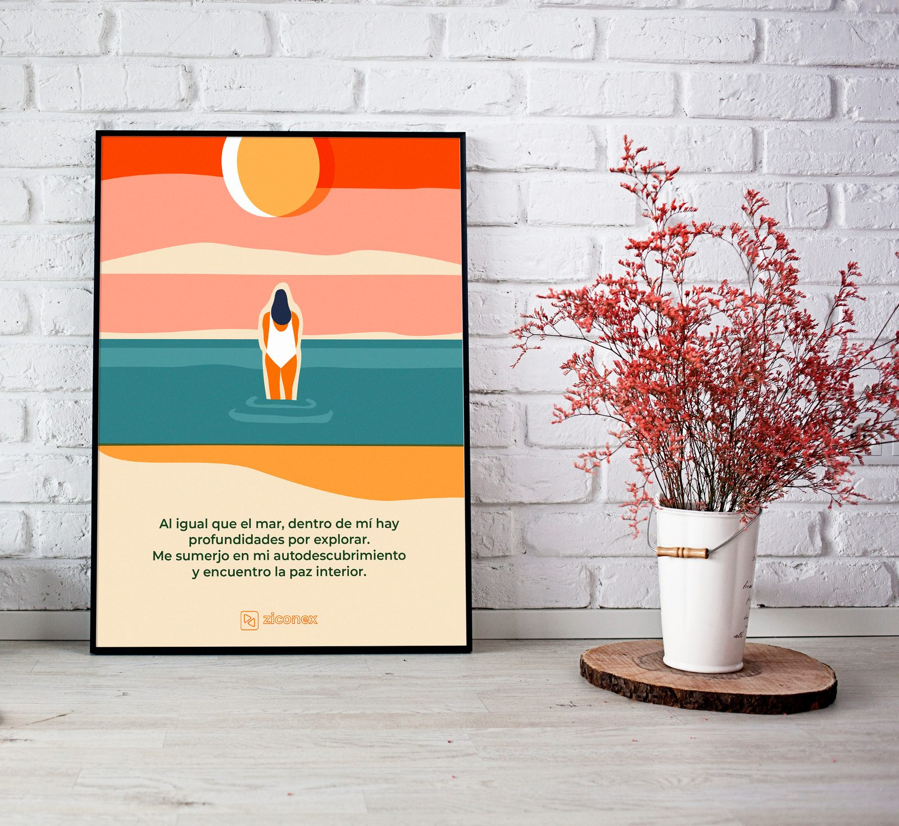

Ziconex offers online psychotherapy in Spanish for people living abroad. Over three months I set the product roadmap and built the brand, the social presence, the Google and Meta ads and the website visuals, as one system.
The audience is Spanish speakers who migrated and want to keep doing therapy, or start, with a therapist who speaks their language. The product is a video-session platform with a small team of psychologists and psychoanalysts. The job: make it look like a safe place, explain how therapy works to people who have never done it, and bring the first clients through ads.
A mental-health brand has to feel calm before it says anything. The green, the clouds and the illustrations do that work.
Before any artwork I wrote the product roadmap and requirements, mapped the service as a concept map and kept the whole thing in a Notion workspace the team could follow: value proposition, benchmark, inspiration, content calendar.

Logo, colour and an illustration style: a soft green, a rounded wordmark, and flat characters floating on clouds that carry the whole campaign, from the feed to the display ads to the website.


Instagram and Facebook as the place to teach: what psychoanalysis is, what a first session looks like, the therapeutic journey, prices. Carousels, single posts, short animations and a consistent feed. Reviews from clients were turned into quote posts.


Display banners for Google Ads and Meta ad sets built from the same illustrations and one claim, “Terapia online en tu idioma”, with a second line for the benefit (“Encuentra el equilibrio y la felicidad que mereces”). Many sizes, one look.


Website visuals and a pricing piece for email and the site: three plans (single session, 6 sessions, subscription) each explained by what happens in therapy at that stage, not only by price per session.

